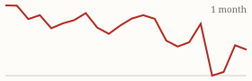
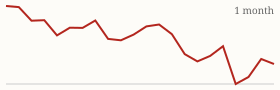

| Today's briefing for operators |
Top line: Florida's boomer wave could flood supply |
|
| Wednesday, November 11, 2026 | Late Edition | Curated from 63 voices on X |
|
Real Estate
Nick Gerli Warns Florida's Buyer Pipeline Is Shrinking
The ratio of young renters to elderly homeowners in Florida is plunging and could soon fall below one, which points to a wave of supply as Baby Boomers age out of their homes.
By @nickgerli1 |
Chart of Florida's ratio of young renters to elderly homeowners. Image via @nickgerli1 on X | Nick Gerli says that in 2015 Florida had 1.48 renters aged 25 to 44 for every homeowner aged 75 and older, and that the ratio has collapsed since then and could soon drop below 1.0. In plain terms, there are fewer young households coming up to buy the homes older owners will eventually sell. |
His read is that Florida could see a big surge in supply over the next decade as Baby Boomers leave their homes. For an operator, that means more inherited, estate and downsizing sellers, but a thinner pool of retail buyers on the exit, so buy boxes and resale assumptions should get more conservative where the population skews old. |
|
| Read on X |
|
Mortgage Rates & Markets | Mortgage Rates Today's average lender rates | 30-year fixed | 7.30% | +0.12 | | 15-year fixed | 6.92% | +0.09 |
Daily change vs. prior day. Source: Mortgage News Daily, as of 11/10/2026 (updated weekdays about 4 PM ET). |
|
S&P 500 Close of Tue, Nov 10 S&P 500 7,520.93 ▼ -29.01 (-0.38%)  Yahoo Finance chart data (daily closes) |
|
Nasdaq Composite Close of Tue, Nov 10 Nasdaq Composite 25,065.87 ▼ -187.27 (-0.74%)  Yahoo Finance chart data (daily closes) |
|
| Real Estate & Deals | The flipped house. Image via @Jacob_Naviaux on X A 55-Day Flip That Left Money for the Next Investor By @Jacob_Naviaux Naviaux bought for $165,000, spent $8,900 on light rehab and $6,800 on other costs, and sold for $227,500 net, a $46,800 profit in 55 days. The buyer, an investor, did a full rehab and resold for $317,000, a reminder that a light-touch exit can still be the right call when it frees up time and capital. Read on X |
Hire a Construction Manager or Keep Holding Off? By @Jacob_Naviaux Naviaux lays out his biggest open decision: a construction manager would free up 20 to 30 hours a week, stop things slipping through the cracks, and let him take on larger projects. It's the classic owner question of when a role costs less than the hours it gives back. Read on X |
The Second Bathroom Is One of the Best Flip Moves By @Jacob_Naviaux Many 1,000 to 1,300 square foot homes built in the 1960s or earlier have just one bath. Moving a few walls to carve out a second full bath turns a 3/1 into a functional 3/2, one of the highest-return changes on a flip. Read on X |
North Carolina Votes to Cap Property Tax Growth By @BiggerPockets North Carolina voters approved a constitutional amendment requiring lawmakers to pass a law capping how much local governments can raise property tax revenue. The details still have to be written into law, so watch how holding costs change. Read on X |
| AI Briefing | OpenAI Launches 'Businesses in ChatGPT' By @OpenAI Now in beta, businesses can claim their listing in ChatGPT, manage their information and see how people engage with them. Eligible businesses can also build a Business Agent to answer customer questions, worth claiming early. Read on X |
Claude Whiteboards, Sheets and Data announcement. Image via @claudeai on X Claude Adds Whiteboards, Sheets and Data By @claudeai Anthropic is rolling out Claude Whiteboards, Claude Sheets and Claude Data, so you can think a plan through on a board, build a tracker in a sheet and tell a story with your numbers inside Claude. Read on X |
Google Releases Gemini 4 Carbon By @GoogleAI Google's strongest model is built for long, complex agent work. Perplexity says it matches Claude Fable 5.2 on its benchmark at 40% of the cost, and watchers expect another Gemini model today. Read on X |
Qwen4-Max Enters Preview By @Alibaba_Qwen Alibaba says Qwen4 brings deeper knowledge and stronger coding and agent skills, with Qwen4-Max now in preview. Early rumors say it disappoints, so wait for real tests. Read on X |
Diamandis: Build Robots for the Chores People Hate By @PeterDiamandis Peter Diamandis says the jobs people would gladly never do again, like cleaning, folding laundry and lifting boxes, are a better robotics roadmap than flashy demos. Google DeepMind's Gemini Robotics 2.5 launched the same day aiming at exactly those tasks. Read on X |
Two Lessons From 4 Million Followers By @Sabrina_Ramonov Sabrina Ramonov says her growth came down to two things: don't quit, and remix proven viral hooks instead of inventing from scratch. It applies just as well to seller marketing content. Read on X |
| Business & Leadership | Don't Make Permanent Moves in a Temporary Storm By @LeilaHormozi Leila Hormozi says bad weeks, months and quarters are reversible, but what you do in a panic usually isn't. Companies don't die from the storm; they die from making irreversible decisions in reversible conditions. Read on X |
Nobody Is Watching You as Closely as You Think By @AlexHormozi Alex Hormozi says nothing is ever as bad as you think, because no one cares about you as much as you think they do. That's permission to try things, ship and adjust. Read on X |
The Edge Is Being Willing to Look Stupid First By @danmartell Dan Martell says the people ahead of you usually aren't smarter, they were just willing to look stupid first. Leaders who model that make it safe for their team to try new things. Read on X |
|
The Hyre Times is compiled each morning by Groky from public posts on X plus public rate and market data. Summaries reflect the authors' own claims and have not been independently verified. Not financial advice. © 2026 Hyre Times. |
|